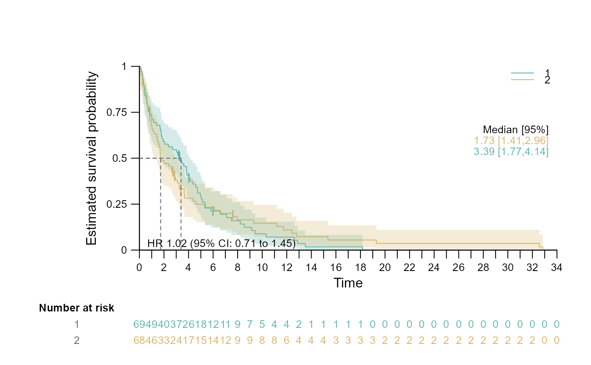
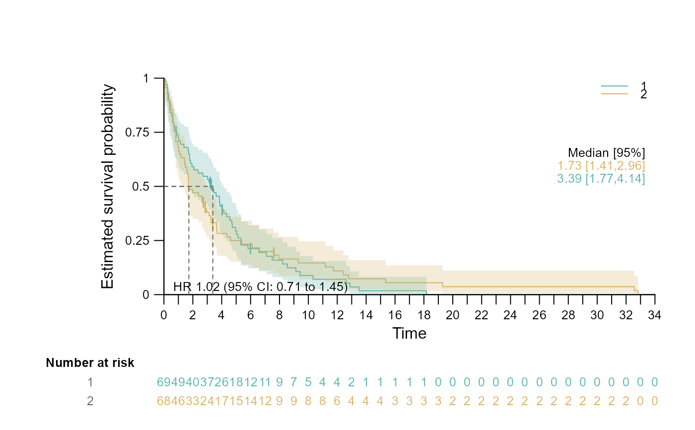

Plot publication ready Kaplan-Meier plot using the results from survival::survfit().
Usage
surv.plot(
fit,
mark.censoring = TRUE,
conf.int = fit$conf.int,
conf.band = TRUE,
conf.line = FALSE,
conf.band.col = col,
conf.band.transparent = 0.25,
conf.type = "log-log",
grid = FALSE,
col = NULL,
main = NULL,
sub = NULL,
xlab = "Time",
ylab = "Estimated survival probability",
cex = NULL,
cex.lab = 1,
cex.axis = 1,
bty = "l",
lty = c("solid", "dotted", "dotted"),
lwd = 1,
xlim = seq(from = 0, to = ceiling(max(fit$time)) + ceiling(min(fit$time))),
ylim = seq(from = 0, to = 1, by = 0.25),
show.legend = TRUE,
legend.position = "topright",
legend.name = NULL,
legend.text.font = 1,
legend.cex = 1,
legend.title = NULL,
legend.title.cex = 1,
segment.type = 3,
segment.timepoint = NULL,
segment.quantile = NULL,
segment.main = NULL,
segment.annotation = "right",
segment.col = "#666666",
segment.annotation.col = col,
segment.lty = "dashed",
segment.lwd = 1,
segment.cex = 1,
segment.annotation.space = 0.06,
segment.font = 1,
segment.main.font = 1,
stat = "none",
stat.position = "bottomleft",
stat.col = "black",
stat.cex = 1,
stat.font = 1,
risktable = TRUE,
risktable.axislab.pos = 2.5,
risktable.margin.bottom = 5,
risktable.margin.left = 6.5,
risktable.title = "Number at risk",
risktable.title.font = 2,
risktable.title.col = "black",
risktable.title.position = par("usr")[1] - (par("usr")[2] - par("usr")[1]) * 0.15,
risktable.cex = 1,
risktable.title.cex = 1,
risktable.name.cex = 1,
risktable.col = "black",
risktable.name.font = 1,
risktable.name.col = "#666666",
risktable.name.position = par("usr")[1] - (par("usr")[2] - par("usr")[1]) * 0.15
)Arguments
- fit
An object of class
survfitcontaining survival data.- mark.censoring
Mark censoring events on the curves. Logical (default: TRUE)
- conf.int
Display confidence intervals. (FALSE, TRUE for 95% confidence intervals, or specify a numeric value for desired coverage.
- conf.band
Mapping the specified coverage probability
- conf.line
A logical value for drawing confidence line (Default: FALSE).
- conf.band.col
Colour(s) for confidence band. Can accept a single value for colour, or a vector of colour values.
- conf.band.transparent
Transparency for the confidence band.
- conf.type
Transformation type of the confidence interval.Options: "log", "log-log", "plain", "logit", "arcsin";(default: "log-log").
- grid
Draw a grid on the plot Logical (default: FALSE)
- col
Colour(s) for the survival curves. Can accept a single value for colour, or a vector of colour values to set colour(s).
- main
Title of the plot.
- sub
Subtitle of the plot.
- xlab
X-axis label.
- ylab
Y-axis label.
- cex
A numeric value specifying the global size of the text.
- cex.lab
A numeric value specifying the size of the xlab and ylab text.
- cex.axis
A numeric value specifying the size of the axis size.
- bty
The type of box to be drawn around the plot ("n","o","7","L","C","U")
- lty
A vector of string specifying line types for each curve (“blank”, “solid”, “dashed”, “dotted”, “dotdash”, “longdash”, “twodash”).
- lwd
A vector of numeric values for line widths.
- xlim
X-axis limits specified as a sequence; seq(starting value, end value, number of increment of the sequence).
- ylim
Y-axis limits specified as a sequence; seq(starting value, end value, number of increment of the sequence).
- show.legend
Display legend.
- legend.position
Position of the legend (c(x,y), "bottomright", "bottom", "bottomleft", "left", "topleft", "top", "topright", "right" and "center").
- legend.name
A vector of string specifying the name(s) of stratum.
- legend.text.font
An integer specifying the font style of the legend text; (1: normal, 2: bold, 3: italic, 4: bold and italic).
- legend.cex
Expansion factor for legend text.
- legend.title
The title of the legend.
- legend.title.cex
Expansion factor for legend title.
- segment.type
A numeric value specifying the layout of the segment (1: Draws specified segment (full bandwidth), 2: Draws specified segment, 3: Drawing vertical and horizontal segment).
- segment.timepoint
A single value or a vector of fixed time points of segment(s).
- segment.quantile
A single value or a vector of fixed quantile of segment(s) at a fixed quantile (e.g. 0.5 corresponds to median).
- segment.main
Title of segment text.
- segment.annotation
Position of the segment annotation: (c(x,y), "bottomleft", "left", "right", "none").
- segment.col
Can accept a single value for colour, or a vector of colour values to set colour(s).
- segment.annotation.col
Can accept a single value for colour, or a vector of colour values to set colour(s).
- segment.lty
A vector of string specifying line types for each curve (“blank”, “solid”, “dashed”, “dotted”, “dotdash”, “longdash”, “twodash”).
- segment.lwd
A vector of numeric values for line widths.
- segment.cex
A numeric values specifying the size of the segment annotation size.
- segment.annotation.space
Spacing between the text in unit of x-coordinates.
- segment.font
A numeric value specifying the font face (1 = plain, 2 = bold, 3 = italic, 4 = bold-italic, ...).
- segment.main.font
A numeric value specifying the fon face (1 = plain, 2 = bold, 3 = italic, 4 = bold-italic, ...).
- stat
Statistics which is displayed in the plot ("logrank", "coxph", "coxmodel", "none").
- stat.position
Position where the stat should be displayed: (c(x,y), "bottomleft", "left", "right", "none").
- stat.col
Can accept a single value for colour.
- stat.cex
A numeric value specifying the size of the stat size.
- stat.font
The font face (1 = plain, 2 = bold, 3 = italic, 4 = bold-italic).
- risktable
A logical value for drawing risk table (Default: TRUE).
- risktable.axislab.pos
Position of the X and Y label, specified on which line.
- risktable.margin.bottom
Modify bottom margin of the plot region in line unit (Default: 5).
- risktable.margin.left
Modify left margin of the plot region in line unit (Default: 7).
- risktable.title
Title of risk table.
- risktable.title.font
Title font of risk table (1 = normal, 2 = bold, 3 = italic, 4 = bold and italic).
- risktable.title.col
Colour for the risk table title. Can accept a single value for colour.
- risktable.title.position
Position of the title on the x-axis.
- risktable.cex
A numeric value specifying the size of the risk table size.
- risktable.title.cex
A numeric value specifying the size of the risk table title.
- risktable.name.cex
A numeric value specifying the size of the riksk legend name(s).
- risktable.col
Colour(s) for the risk table. Can accept a single value for colour, or a vector of colour values to set colour(s).
- risktable.name.font
legend name(s) font of risk table (1 = normal, 2 = bold, 3 = italic, 4 = bold and italic).
- risktable.name.col
Colour for the risk table name. Can accept a single value for colour.
- risktable.name.position
Position of the legend name(s) on the x-axis.
Value
Publication-Ready Kaplan-Meier Plot incorporating various statistics and layout customisation options to enhance the efficiency and adaptability of the Kaplan-Meier plot.
Examples
# Load Libraray
require(survival)
require(survSAKK)
# Load Data
veteran$time_yr <- veteran$time/365.25
veteran$time_mt <- veteran$time_yr*12
# Create survival object
veteran_fit_yr <- survfit(Surv(time_yr, status) ~ 1, data = veteran)
veteran_trt_fit_mt <- survfit(Surv(time_mt, status) ~ trt, data = veteran)
# Generate survival plots
survSAKK::surv.plot(fit = veteran_fit_yr)
 survSAKK::surv.plot(
fit = veteran_trt_fit_mt,
col = c("#5ab4ac","#d8b365"),
cex = 0.8,
segment.quantile = 0.5,
stat = "coxph",
risktable.col = c("#5ab4ac","#d8b365"))

survSAKK::surv.plot(
fit = veteran_trt_fit_mt,
col = c("#5ab4ac","#d8b365"),
cex = 0.8,
segment.quantile = 0.5,
stat = "coxph",
risktable.col = c("#5ab4ac","#d8b365"))
